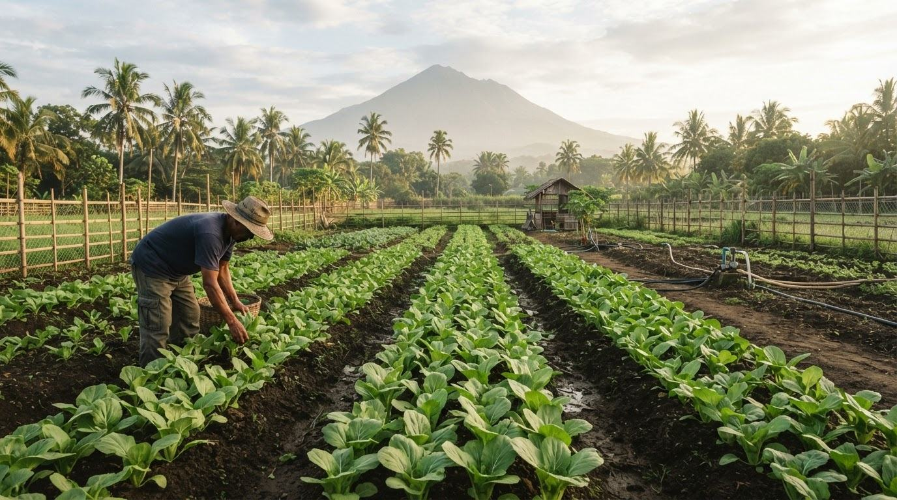
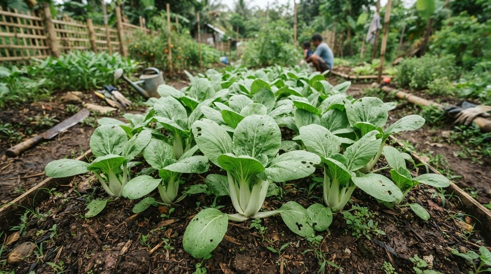
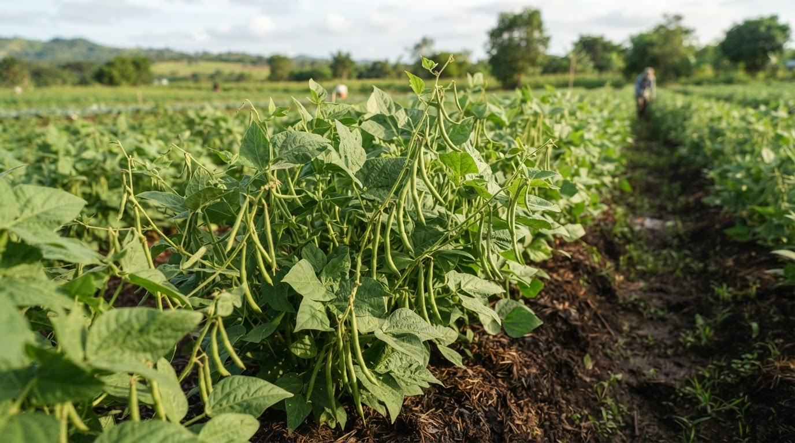
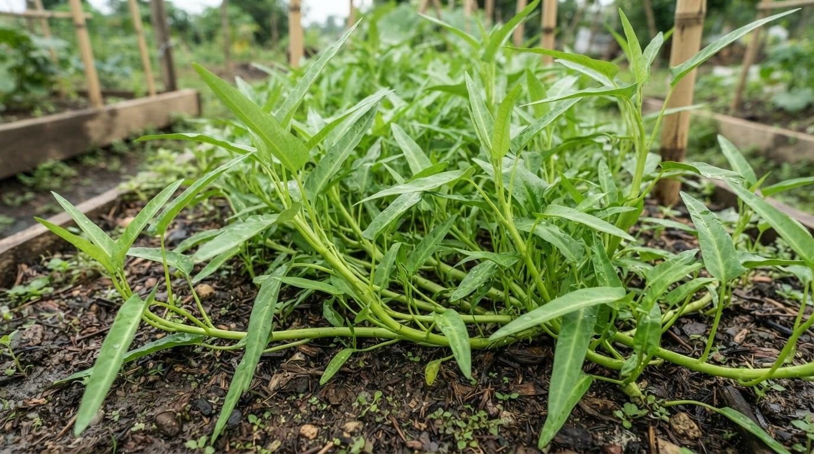
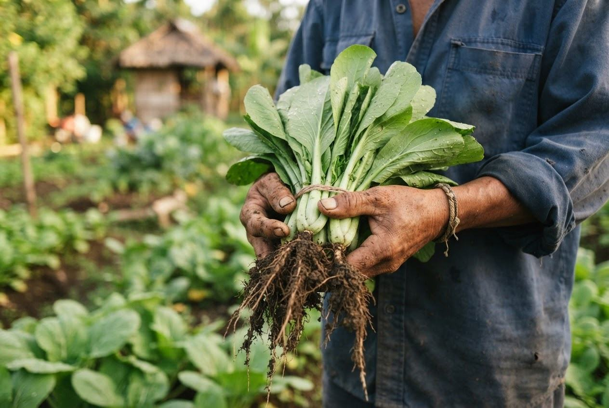

01 / FIELD TO DECISION
Know your conditions
Enter soil pH, temperature, humidity, and rainfall. Add your province and season when you know them.
GROUNDED IN YOUR LAND · MADE FOR THE PHILIPPINES
Turn a few soil and climate details into a thoughtful crop shortlist. Understand what fits, what’s missing, and what to check before you plant.
♧ Local crop names. Clear reasoning. No promises of yield.

FIELD NOTE / START WITH YOUR DATA NO DEFAULTS
Use a soil test and a representative climate location. Load climate values from NASA POWER.
☷ Start with four core inputs
♧ Explore 7 crop categories
✣ See the reasons, not just a rank
A SIMPLE WAY TO START
A planning companion, not a substitute for your own experience or a local agriculture adviser.
01 / FIELD TO DECISION
Enter soil pH, temperature, humidity, and rainfall. Add your province and season when you know them.
02 / FIELD TO DECISION
Review a transparent screening score against FAO ECOCROP requirement bands, with favorable factors and limitations side by side.
03 / FIELD TO DECISION
Compare crops, check a seasonal window, and save a farm profile to revisit as your information improves.
HOW TO USE TANIMTECH
Use the system as a transparent screening tool, then validate the shortlist in your field.
Use a representative soil test. Do not guess this value.
Add latitude and longitude, select a month, and load NASA POWER climate values.
Compare pH, temperature, and annual rainfall with FAO ECOCROP requirements.
Inspect drainage, pests, seed quality, and local advisories before planting.
Crop ecological requirement bands and cycle ranges, published through the OpenCLIM export.
Location-based climate climatology for temperature, humidity, and precipitation.
Use Philippine soil and production sources for local verification beyond this screening layer.
FAMILIAR CROPS. MORE INFORMED CHOICES.

LEAFY AND FRUIT VEGETABLES
A short-cycle leafy option for a closer look.
40–90 days · FAO ECOCROP range
Open crop guide ↗
LEGUMES
A different growing rhythm for your shortlist.
50–120 days · FAO ECOCROP range
Open crop guide ↗
LEAFY AND FRUIT VEGETABLES
Familiar greens, with water conditions to check.
30–70 days · FAO ECOCROP range
Open crop guide ↗Also explore grains, root crops, fruit trees, plantation crops, and edible trees and herbs.
REASONING YOU CAN READ
A crop may align with the conditions you enter and still face pests, poor drainage, or a heavy downpour. We keep fit and certainty separate.
Every shortlist shows the favorable conditions, the trade-offs, and the missing information that deserves a field check.
See how recommendations work ↗BEFORE A SCORE IS SHOWN
TanimTech will not invent pH, weather, or location values. Enter a measured pH and load climate normals for a representative coordinate.
REAL CLIMATE INPUTS
The conditions workflow can retrieve temperature, relative humidity, and precipitation from NASA POWER. Rainfall is converted to an annual total because FAO ECOCROP records its rainfall requirement that way.
Load field climate ↗SOURCE / NASA POWER
The lookup uses the NASA POWER Climatology API with MERRA2/POWER data for January 2001–December 2025. Select a month for temperature and humidity; the annual precipitation total is used for crop screening.
KNOW WHAT GOES INTO A RECOMMENDATION
Core conditions start the assessment. Optional context adds perspective. Planned factors are clearly unavailable.
Soil pH, temperature, and annual rainfall are scored; NASA POWER humidity is collected as context.
Soil type, season, location, and source metadata help explain the shortlist.
Drainage, pests, market demand, and other field realities are not assessed or available as inputs.

MADE TO SUPPORT YOUR JUDGMENT
You know where water sits after rain and which bed gets the morning sun. TanimTech helps organize the conditions you can describe, not replace the knowledge you already have.
Bring your shortlist to your local agriculture office before planting at scale.
BEFORE YOU BEGIN
Clarity before confidence.
No. Fit describes alignment with entered conditions against FAO ECOCROP requirement bands. It is not a yield prediction or a probability of success.
No connected sensors are needed. Use a soil test and representative climate values where possible. If you do not know a core value, gather it first rather than guess.
Yes. The committed crop subset uses FAO ECOCROP records exported through OpenCLIM. Its thresholds are expert estimates, not validated field or trial results.
START SMALL. PLAN THOUGHTFULLY.
Start with measurements from your own field.